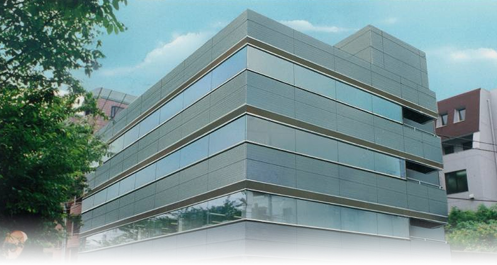
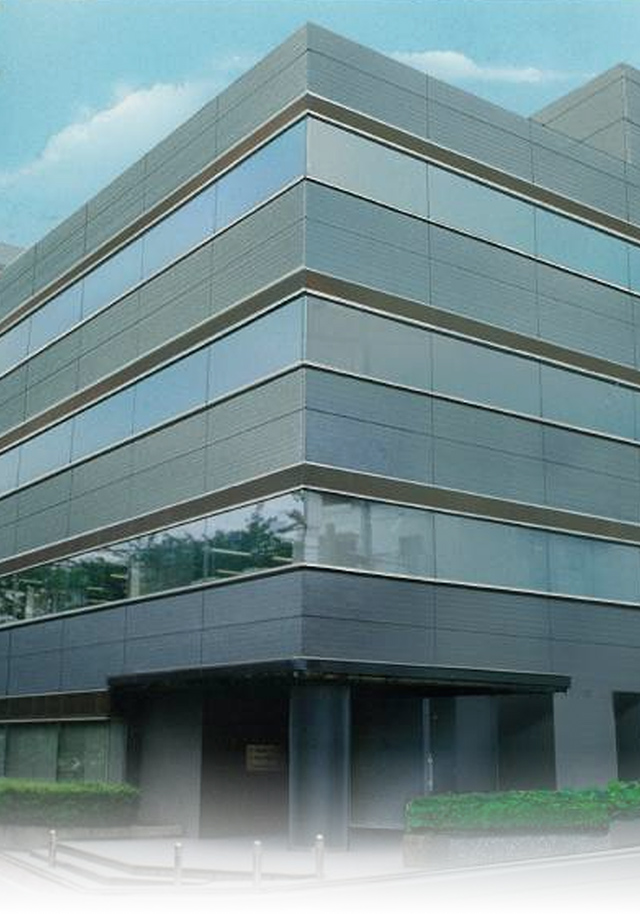

COMPANY
 快適な街を支えるプロフェッショナル FACILITY PROFESSIONAL
私たちの使命
- ビルや施設など、ファシリティの価値を高めるプロとして、
- 笑顔が生まれる美しい空間を創ります。
- お客様のパートナーとして、その期待と信頼に応え、
- 企業としての社会的責任を果たします。
- 一人ひとりの能力が活かされ、働きがいのある会社を、
- 全員の知恵と力でつくりあげます。
行動指針
「今よりもっと」
Think創意工夫
Challenge現状打破
Communicate誠心誠意